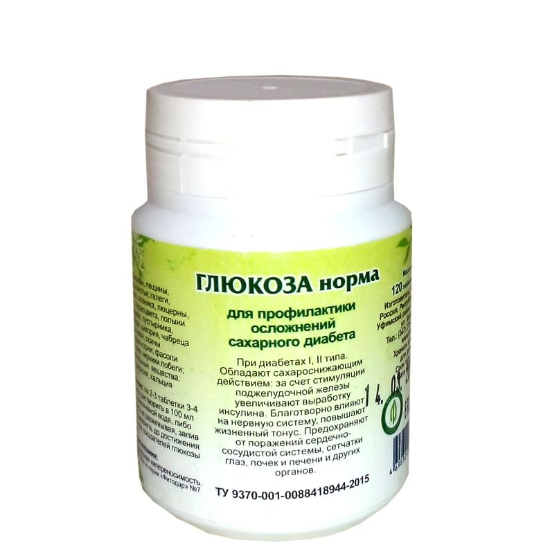

Ассортимент магазина
Главная
Эфирные масла
Глина пищевая
Натуральная косметика
Бактериям-стоп
О товаре
Рекомендованы при всех хронических заболеваниях бактериальной и микробной этиологии, в том числе органов дыхания - хроническом обструктивном бронхите, хронической пневмонии, бронхоэктатической болезни, туберкулезе, саркоидозе легких и др. Можно применять при раке легкого и метастазах в легких. Как антибактериальное, антимикробное и улучшающее газообмен средство.
Витамины для мозга
О товаре
Положительно влияет на деятельность нервной системы: способствует выравниванию процессов возбуждения и торможения в коре головного мозга, повышению умственной работоспособности, снижению повышенной раздражительности, нормализации сна.
Гельминтам
О товаре
Травяной сбор в таблетках от глистов эффективны при глистных инвазиях, заражениях простейшими хламидиями, лямблиями и т.п. Надежно изгоняют паразитов из организма, способствуют восстановлению пораженных слизистых оболочек желудочно-кишечного тракта. Курс приема: 1,5-2 месяца (180 таблеток артикул 11915438). Обязательным условием оздоровления является наличие ежедневного мягкого стула от 1-2 раза в день. Способ применения : растворить из расчета 1 таблетка на 40 кг веса в 100 мл теплой некипяченой воды, либо проглотить не разжевывая. Принимать на ночь.
Паразитам-стоп
О товаре
Эффективны при глистных инвазиях, заражениях простейшими хламидиями, лямблиями и т.п. Надежно изгоняют паразитов из организма, способствуют восстановлению пораженных слизистых оболочек желудочно-кишечного тракта. Минимальный курс приема: 1,5-2 месяца. Обязательным условием оздоровления является наличие ежедневного мягкого стула от 1-2 раза в день. При необходимости дополнить приемом напитка чайного «Кишечник без запоров-1» на ночь.
Глюкоза норма
О товаре
Обладают сахароснижающим действием: за счет стимуляции поджелудочной железы увеличивают выработку инсулина. Благотворно влияют на нервную систему, повышают жизненный тонус. Предохраняют от поражений сердечно-сосудистой системы, сетчатки глаз, почек и печени и других органов.

Грибок-минус
О товаре
Мягко корректируют иммунодефицитные состояния и являются эффективным средством при различных грибковых поражениях кожи (грибок ногтей, грибок на ногах) и слизистых оболочек. Применение; по 2-4 таблетки 3 раза в день растворить в 100 мл теплой некипяченой воды, либо проглотить не разжевывая, запив водой, за 10 минут до еды.
Грудь здоровая
О товаре
Способствуют нормализации гормонального баланса. Таблетки для груди устраняют условия, при которых развиваются мастопатии, маститы, болезненность, набухание или нагрубание молочных желез.Минимальный курс приема: 2-3 месяца (240 таблеток артикул 11915428, 360 таблеток артикул 11915428 ).
Для стройности
О товаре
Таблетки для стройности ( похудения ) способствуют уменьшению аппетита, нормализации углеводно-жирового обмена, гормонального фона, как у мужчин, так и у женщин.Оказывают мягкое мочегонное и слабительное действие.
Желудок здоровый
О товаре
Эффективное болеутоляющее, спазмолитическое, ранозаживляющее и противоопухолевое средство. Рекомендованы при острых и хронических гастритах, сопровождающихся типичными жалобами на тяжесть в эпигастральной области, голодные боли, усиленное газообразование, потерю веса; способствуют защите слизистых желудка и кишечника, нормализации кислотности, улучшению процесса пищеварения. Можно применять при онкологических заболеваниях органов пищеварения.